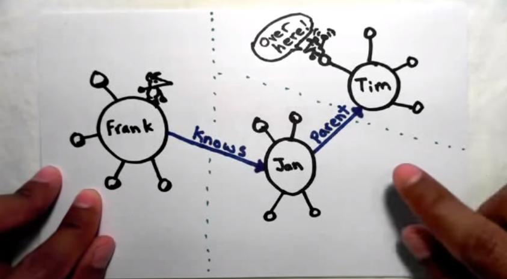

wwwL(inked)

Linked data, RDF, SPARQL and the future
Presentation by TheodorosPloumis / @theoploumis
Meetup No 29 - 16 March 2016 - TechMinistry.
Under Attribution 4.0 International license.
What is Semantic Web
- Humans can understand web content
- Machines (computers) need some help
- In a semantic environment Machines can understand the meaning of a thing (document, port, text, system status etc) and link to/from it.
- Metadata are a type of semantics
What do Humans read
Drupal meetup Thessaloniki will take place
in Techministry at Thursday 18 February 2016
from 20:00 to 22:00.
What do Machines read
Word word link word word word word link
word link word link.
What should Machines read
-> Event description starts
Word word Link of a City word word word word Link of a Place
word link of a Date word link of a 24h Time.
-> Event description ends
What is Linked Data
- Really connected structured web
- Bizer, Heath and Berners-Lee (2009)
- Internet of Things not only of documents
- Linked Data may noy be Open Data
- Automatic decisions
- Find information faster, easier and with accuracy
- The basic 'engine' behind Big Data
- The key for Open Government/Cities/Health/...
The 5th star of the Open Data

Linked data simplified
One giant global graph
 Source by Manu SpornyTech behind linked data
- URI (Uniform Resource Identifier)
- RDF (Resource Description Framework)
- http
- Vocabularies - Ontologies
- SPARQL
The 4 principles of Linked Data
Tim Berners-Lee, 2006
- Use URIs to name (identify) things.
- Use HTTP URIs so that these things can be looked up (interpreted, dereferenced).
- Provide useful information about what a name identifies when it's looked up, using open standards such as RDF, SPARQL, etc.
- Refer to other things using their HTTP URI-based names when publishing data on the Web.
RDF
- Provides a generic graph-based data model for describing things, including their relationships with other things
- W3C specification (1997)
- Only describes resources
- It's a data model, a concept not a data format
- It needs serialization
- Current version RDF 1.1 (2014) vs 1.0 (2004)
The RDF triples
- [subject] [predicate] [object]
- "John knows Mary"
- We must state explicitly the nature of the connection
- 2 principal types of RDF triples: Literal Triples and RDF Links
The RDF Literal triple
- Describe the properties of resources (values)
- [subject] [predicate] ( string, number, or date )
- [Drupal] [latest version is] 8.0.3
http://drupal.org
https://schema.org/softwareVersion
"8.2.0"
The RDF Links
- Describe the relationship between two resources
- Can be internal or external (we need the 2nd)
- [Related resource of Subject] [What is the Relationship] [Related resource of Object]
http://a.com/people/matt
http://xmlns.com/foaf/0.1/knows
http://b.com/people/dave
The RDF Anatomy
- [subject]: URI, Blank_node (bnode)
- [predicate]: URI
- [object]: URI, Blank_node, Literal
The RDF Graph
- A collections of statements about a thing
- Starting with the same Subject
- The URIs occurring as subject and object are the nodes in the graph
Serializing RDF data
Taxonomies, Vocabularies and Ontologies
- Domain-specific terms for describing classes (groups) of things and how they relate to each other
- Lightweight ontologies in RDF often referred as vocabularies
- They borrow classes/properties from each other
- Schema.org, SKOS, FoaF, DCMI, SIOC etc
SPARQL
- 'Default' query language for RDF (there are many others)
- Similar to SQL
- Fast and secure
- Endpoints, frontends, wrappers
- Apache Jena, Virtuoso, 4Store, Dydra
SPARQL - Syntax
# prefix declarations
PREFIX foo:
SPARQL - Examples
The problems of Linked Data
- Confusion of standarization (see w3c)
- Hard for developers to understand
- Which schema and ontology to use
- Need for powerful/special software
- Missing metadata for the datasets
- Quality and accuracy of the data
The (linked) future
- Json-LD
- Web payments
- Open Credentials
- Graph databases (eg Neo4J)
- Open RESTful APIs
- Personal answer machines
Follow them